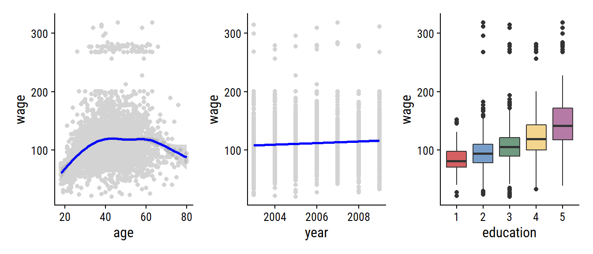

1 Introduction
An Overview of Statistical Learning
Broadly speaking, supervised statistical learning involves building a statistical model for predicting, or estimating, an output based on one or more inputs.
With unsupervised statistical learning, there are inputs but no supervising output; nevertheless we can learn relationships and structure from such data.
Wage Data
Load the Wage data set via the ISLR2 package:
library(ISLR2)
wage <- ISLR2::Wage
head(wage)## year age maritl race education region
## 231655 2006 18 1. Never Married 1. White 1. < HS Grad 2. Middle Atlantic
## 86582 2004 24 1. Never Married 1. White 4. College Grad 2. Middle Atlantic
## 161300 2003 45 2. Married 1. White 3. Some College 2. Middle Atlantic
## 155159 2003 43 2. Married 3. Asian 4. College Grad 2. Middle Atlantic
## 11443 2005 50 4. Divorced 1. White 2. HS Grad 2. Middle Atlantic
## 376662 2008 54 2. Married 1. White 4. College Grad 2. Middle Atlantic
## jobclass health health_ins logwage wage
## 231655 1. Industrial 1. <=Good 2. No 4.318063 75.04315
## 86582 2. Information 2. >=Very Good 2. No 4.255273 70.47602
## 161300 1. Industrial 1. <=Good 1. Yes 4.875061 130.98218
## 155159 2. Information 2. >=Very Good 1. Yes 5.041393 154.68529
## 11443 2. Information 1. <=Good 1. Yes 4.318063 75.04315
## 376662 2. Information 2. >=Very Good 1. Yes 4.845098 127.11574Load the tidyverse, and set my ggplot2 theme:
library(tidyverse)
library(dunnr) # My personal R package
library(patchwork) # For composing plots
extrafont::loadfonts(device = "win", quiet = TRUE)
theme_set(theme_td())
set_geom_fonts()
set_palette()Now attempt to re-create Figure 1.1:
p1 <- wage %>%
ggplot(aes(x = age, y = wage)) +
geom_point(color = "lightgrey") +
geom_smooth(color = "blue")
p2 <- wage %>%
ggplot(aes(x = year, y = wage)) +
geom_point(color = "lightgrey") +
geom_smooth(method = "lm", color = "blue")
p3 <- wage %>%
# Need to re-label the factor levels
mutate(education = fct_relabel(education, ~str_extract(., "\\d"))) %>%
ggplot(aes(x = education, y = wage)) +
geom_boxplot(aes(fill = education)) +
theme(legend.position = "none")
p1 + p2 + p3
A Brief History of Statistical Learning
This Book
The Elements of Statistical Learning (ESL) by Hastie, Tibshirani, and Friedman was first published in 2001. Since that time, it has become an important reference on the fundamentals of statistical machine learning. Its success derives from its comprehensive and detailed treatment of many important topics in statistical learning, as well as the fact that (relative to many upper-level statistics textbooks) it is accessible to a wide audience.
The purpose of An Introduction to Statistical Learning (ISL) is to facilitate the transition of statistical learning from an academic to a mainstream field. ISL is not intended to replace ESL, which is a far more comprehensive text both in terms of the number of approaches considered and the depth to which they are explored.
I may also pull from ESL (Hastie, Tibshirani, and Friedman 2009) at times for more detailed treatments of complex topics.
ISL is based on the following four premises 1. Many statistical learning methods are relevant and useful in a wide range of academic and non-academic disciplines, beyond just the statistical sciences. 2. Statistical learning should not be viewed as a series of black boxes. 3. While it is important to know what job is performed by each cog, it is not necessary to have the skills to construct the machine inside the box! 4. We presume that the reader is interested in applying statistical learning methods to real-world problems.